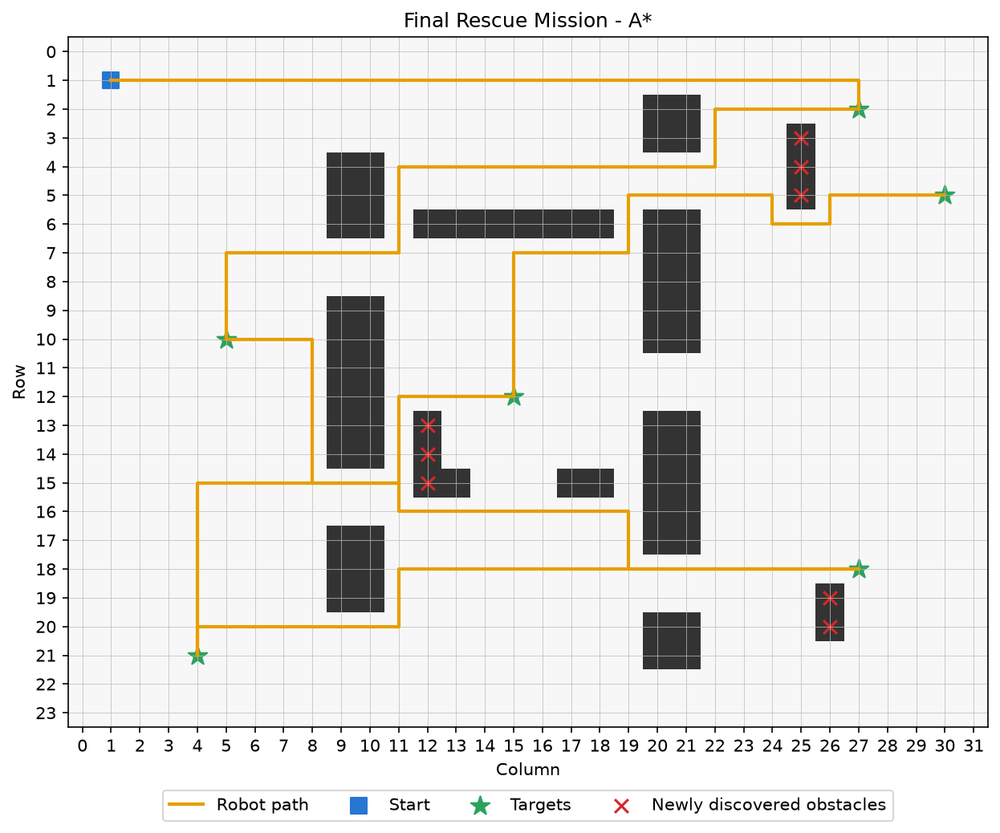

TARGET COVERAGE
100%
6 of 6 rescue targets reached
MISSION PATH
157 steps
Recorded movement history
OBSTACLES DISCOVERED
8
Dynamic obstacles detected
REPLANNING EVENTS
5
Route adjustments during mission
Explored cells by target
Path length by target
Planning runtime by target
Runtime is measured in milliseconds and can fluctuate with system load. A* is not guaranteed to be faster on every individual target.
Benchmark summary
| Metric | BFS | A* |
|---|---|---|
| Total explored cells | 2,346 | 920 |
| Average explored / target | 391.0 | 153.3 |
| Path lengths matched | 6 of 6 targets | |
| Explored-cell reduction with A* | 60.8% | |
The reduction compares the sum of explored cells over the six independent benchmark runs. It is not a runtime speedup claim.
All-target benchmark data
| Target | BFS steps | A* steps | BFS explored | A* explored |
|---|---|---|---|---|
| (2, 27) | 27 | 27 | 398 | 52 |
| (10, 5) | 13 | 13 | 120 | 50 |
| (18, 27) | 43 | 43 | 657 | 430 |
| (21, 4) | 23 | 23 | 297 | 84 |
| (12, 15) | 25 | 25 | 350 | 162 |
| (5, 30) | 33 | 33 | 524 | 142 |
Final robot path

Keep this HTML file in the same folder as final_run.png for the visualization to appear.
Autonomous Search & Rescue Robot Simulation · Benchmark results transcribed from the reported console run.